Органы управления
Глава
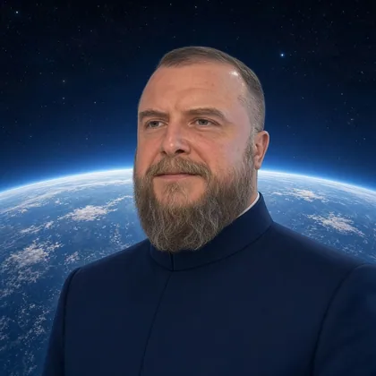
Алексей Алексеевич Гапонов
Президент МОО "Русское Космическое Общество".
Вице-президент фонда русской цивилизации "Светославъ".
Участник СВО. Награждён медалью "За отвагу".
Правление
Члены Правления
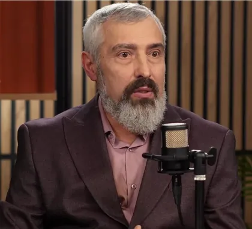
Макаров Владимир Витальевич
Председатель Правления МОО "Русское космическое общество"
Председатель Санкт-Петербургского отделения РКО. Заместитель председателя Философского Совета РКО. Член Первого отряда.

Козлова Анна Сергеевна
Куратор Региональных отделений и проектной деятельности Русского Космического Общества.
Руководитель Совета правды и просвещения.

Шамаева Екатерина Фёдоровна
Кандидат технических наук. Член-корреспондент РАЕН. Заместитель главного редактора научно-образовательных электронных журналов «Устойчивое…

Токарев Валерий Иванович
Лётчик-космонавт, Герой России, полковник ВВС
Президент «Благотворительного Фонда Памяти Первого Космонавта Планеты и Его Летного Наставника»

Гапонов Алексей Алексеевич
Президент МОО "Русское Космическое Общество".
Вице-президент фонда русской цивилизации "Светославъ".
Полномочные представители Правления
Сведения не опубликованы
Управление развитием ноосистемы РКО
Сведения не опубликованы
Техническое управление

Антонов Павел Романович
Руководитель Технического управления Русского Космического Общества.
Выпускник НИЯУ МИФИ по специальности Комплексная защита объектов информатизации.
Высший Совет РКО
Председатель Высшего Совета
Сведения не опубликованы
Руководители Советов
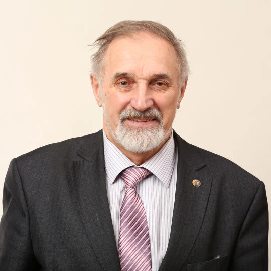
Петров Андрей Евгеньевич
Доктор технических наук, профессор кафедры Автоматизированного проектирования и дизайна института ИТАСУ НИТУ «МИСиС», действительный член РАЕН.…
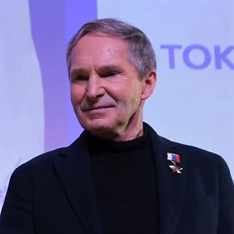
Токарев Валерий Иванович
Лётчик-космонавт, Герой России
полковник ВВС
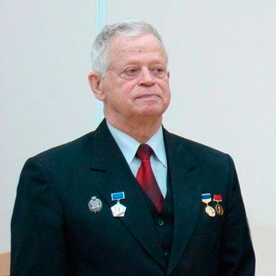
Субетто Александр Иванович
Доктор экономических наук, доктор философских наук, кандидат технических наук, профессор.
Директор Центра Ноосферного Развития Северо-Западного института управления РАНХиГС при Президенте РФ, первый вице-президент Петровской академии наук и…
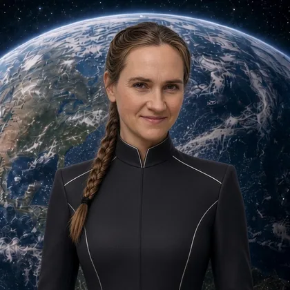
Козлова Анна Сергеевна
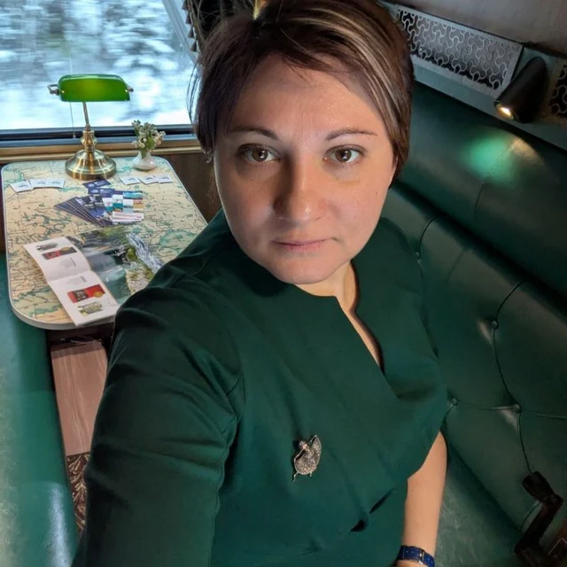
Шамаева Екатерина Фёдоровна
Кандидат технических наук. Член-корреспондент РАЕН. Заместитель главного редактора научно-образовательных электронных журналов «Устойчивое…
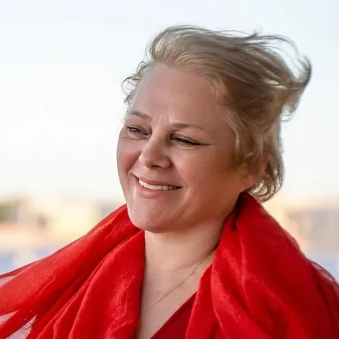
Лебедева Мирина Евгеньевна
Общественный деятель
Руководитель регионального отделения Федерального народного совета в Санкт-Петербурге
Губенко Мария Владимировна
Член Перового Отряда.
Руководитель проектов: "Соэволюция", "Звёздный журнал", "Звездолёт".
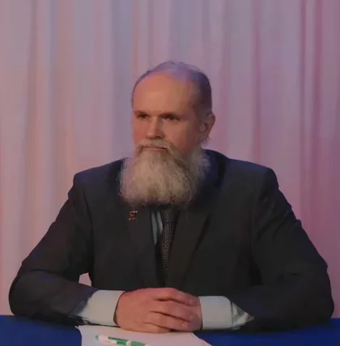
Михаил Юрьевич Волчков
Владелец, ген.директор ООО «ДИАЛ» по изготовлению средств дезактивации различных поверхностей, в том числе кожных и волосяных покровов человека, от…
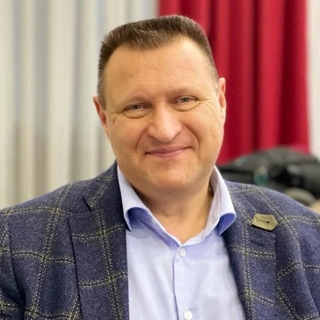
Щербаков Андрей Владимирович
Директор Института социально-экономического прогнозирования им.Д.И.Менделеева
НИИ Моделирования Будущего, учредитель
Смага Анастасия Андреевна
Юрист-международник, эксперт по комплаенс
Президент консалтинговой компании «ЮниЛигал» Руководитель Комитета по комплаенс и юридической безопасности АДКНК БРИКС Преподаватель…
Руководитель не указан: Общественно-государственный Совет, Арктический Совет, Молодёжный Совет, Совет физической культуры и спорта.
Региональные отделения
Председатели региональных отделений
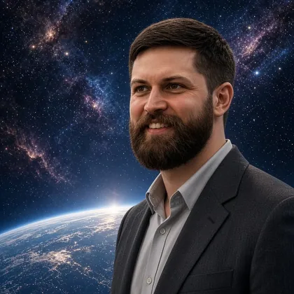
Павел Романович Антонов
Руководитель Технического управления Русского Космического Общества.
Выпускник НИЯУ МИФИ по специальности Комплексная защита объектов информатизации.
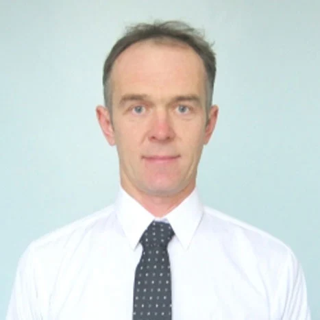
Инженер- механик, исследователь истории создания ракетно-ядерного щита СССР.
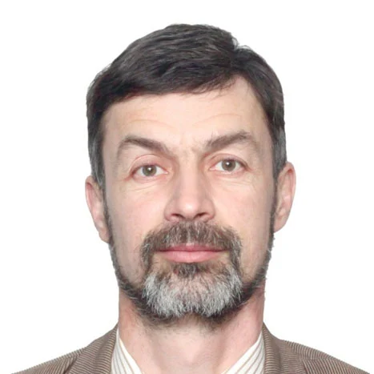
Дмитрий Борисович Берг
Профессор, доктор физико-математических наук.
Руководитель проекта СИТШ
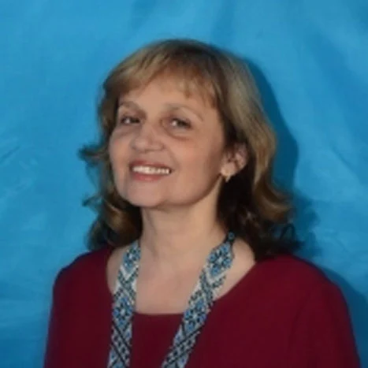
Наталья Васильевна Радюк
Экскурсовод, научный сотрудник Муниципального бюджетного учреждения культуры Музея — заповедника под открытым небом "Сундуки"
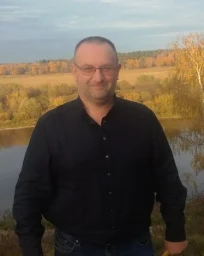
Алексей Михайлович Пухович
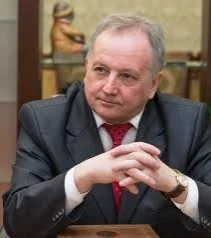
Александр Яковлевич Аноприенко Ректор Донецкого национального технического университета (ДонНТУ)
Элеонора Владиленовна Баркова
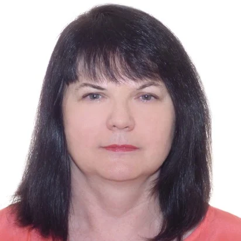
Ирина Константиновна Лапшина
Зав. кафедрой всеобщей истории Владимирского государственного университета имени А.Г. и Н.Г. Столетовых, д.и.н., профессор
Грицкевич Татьяна Игоревна Профессор кафедры философии и общественных наук ФГБУ ВО «Кемеровский государственный университет», доктор философских наук.
Николай Николаевич Калитенко
Ветеран Байконура, заслуженный испытатель Байконура, подполковник Космических войск (в запасе). Педагог дополнительного образования, руководитель…
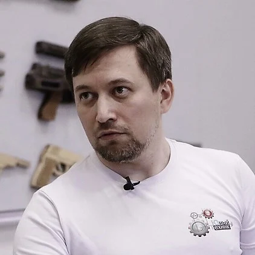
Владимир Юрьевич Колпаков
Учитель физики и математики, популяризатор астрономии.
Член Общественной палаты Псковской области 2018-2021 г.г., один из организаторов открытого регионального турнира Псковской области по робототехнике и…
Горшков Алексей Андреевич
Участник команды проекта «Киноуроки в школах России и мира»: kinouroki.ru
Общественный деятель
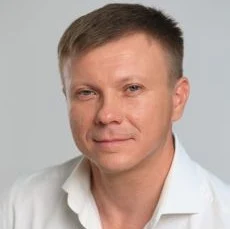
Алексей Васильевич Щербенко
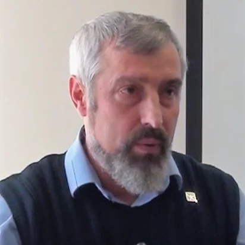
Владимир Витальевич Макаров
Председатель Правления МОО "Русское космическое общество"
Председатель Санкт-Петербургского отделения РКО. Заместитель председателя Философского Совета РКО. Член Первого отряда.
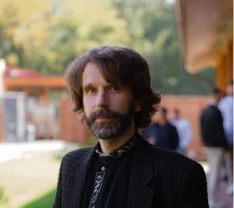
Александр Михайлович Димов
Доктор физико-математических наук h.c. Профессор. Почетный член Международной академии педагогических наук. Член корреспондент Российской академии…
Калининградская область: вакантно.
Зарубежные представительства
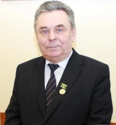
Пётр Григорьевич Никитенко Академик Национальной академии наук Беларуси. Доктор экономических наук, профессор. Советник НАН Беларуси. Главный Научный…
Ирина Константиновна Мухина
Учредитель инновационного образовательного центра познания и творчества iECARUS и частной школы ЭРУДИТ, приглашенный преподаватель в НГУ и в РАНХ.
Автор и ведущая видео-блога Искусственный Интеллект для домохозяек.
В макете сведения о людях сокращены до двух строк.